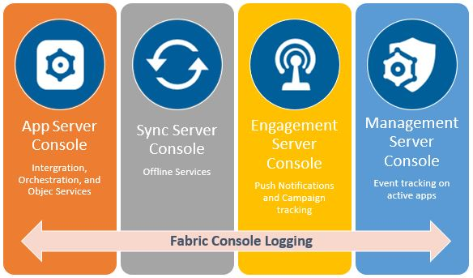

Testing Services from Server Consoles
The Logging Service module displays the logs generated in the Integration and Storage services. If your application uses other capabilities of VoltMX Foundry, such as Sync and Engagement, you can use the individual feature's console interface to retrieve the desired logs.
You can test the specific service in the individual feature's console interface only after publishing the service in VoltMX Foundry environment.
As in previous sections of this tutorial, we discussed a scenario of an online bookstore that received orders from customers. Let us consider an example related to the scenario.
Retrieving the list of books based on the Published Date
To retrieve the books available in the inventory based on the specified published date, we need to create a service ](related to the scenario) and test it. For more information on creating a service and corresponding operations to the service, refer to Integration Service Designer.
You can generate logs for the following consoles.

To access server consoles from VoltMX Foundry Console, follow the steps below :
- Log on to your VoltMX Foundry Console account and click Environments/Clouds.
-
Under the Environments/Clouds section, you can view the different consoles available for your cloud account.

App Server Console
The App server console helps you to test in Integration and Object services that are published in VoltMX Foundry.
The Logging section in the App Services Console allows you to customize the type logs generated on the server. You can customize the generated logs by modifying few logging settings in the User Interface (UI). VoltMX Foundry will then record only logs pertaining to your settings.
To customize server logs, follow these steps:
- Under the Environment/Clouds tab, click the App Services icon.
-
Click Settings from the left pane of the App Services console.
The Settings page appears containing Logging, Runtime Configuration, and Environment details. The Logging page displays the settings of various server logs.

-
Customize the settings to fit your requirement.
Sync Console
The logs section in VoltMX Sync Console shows the data synchronization logs between client devices and the enterprise data source.
To access the logs in Sync Console, follow these steps:
- From the Environment/Clouds tab, click Sync Services.
-
On the Sync Console Services page, click Logs from the left pane.

Engagement Console
VoltMX Engagement Console helps the administrator list out all Engagement services and related actions initiated by their registered users.
To view the logs in VoltMX Engagement Console, follow these steps:
- From the Environment/Clouds tab, click Engagement Services.
- In the Engagement Console, go to Settings/Configuration.
-
On the Configuration screen, click the Logging tab to view and control Engagement Server logs.

Management Console
VoltMX Management Console displays the list of actions of a device, device set, or policy that you initiated.
To access the logs section in Management Console, follow these steps:
- From the Environment/Clouds tab, click Management Services from the list of consoles displayed.
-
On the Management Console screen, under the Settings section in the left pane, click Event Log to view the Management Console logs.

Let's take the case of pulling out logs for the Books API in detail from the App Services Console.
Testing a Service from Admin Console
As we saw in previous parts of this course, it is possible for us to test a service from the VoltMX Foundry Console. We can also test the API after publishing it from the App Services Console. This lets you debug your live API, to find the Root Cause for the failure quickly.
You can test the service in App Services Console only after publishing the service in VoltMX Foundry environment.
To try out services from the App Services Console, follow these steps:
-
From the App Services console, click the Integration tab from the left pane.
You will be able to view the list of Integration services created and published in VoltMX Foundry.
-
Search for your service name. In our case, we used the Books API service.
- Select an operation from the Operations List.
-
The Request Input window displays the server URL along with Header and Body parameters. You can modify parameter values, and hit the Get Response button to try out the AI for different combinations.
Here's what this interface looks like :

Hope you found this tutorial useful, please reach out to us for any queries on basecamp.
| Rev | Author | Edits |
| 8.0 | AU | AU |